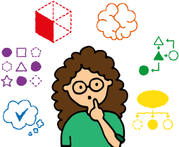

簡單來說，運算是利用電腦解決問題的過程，電腦科學是關於運算的學問。電腦科學家在用電腦解決問題時形成了特有的思維方式和解決方法，即運算思維。
針對一個問題，設計出解決問題的解決方案（即通常說的「程式」），並由電腦來執行這個程式，這就是運算（Computation）。通過運算，電腦能夠完成各種神奇複雜的任務。
所以電腦就是進行「運算」的機器。顯然，這裡的「運算」並不是日常說的數學計算。事實上，電腦在顯示器上顯示信息，在瀏覽器上顯示網頁，在播放器上播放音樂，這些都是運算。
電腦利用各種運算，能解決各種不同類型的問題。其中的奧秘就在於程式。通過加載執行不同的程式，就能實現不同的功能，解決各式各樣的問題。
為了更好地利用電腦解決問題，科學們深入研究了關於運算的理論、方法和技術，形成了專門研究運算的學問 — 電腦科學（Computer Science）。
(圖片來源：https://csunplugged.org/en/what-is-computer-science)。
上面提到，程式是某個問題的解決方案，它能在電腦上執行。設計一個問題的解決方案時，首先要找出該問題的解決方法，該方法一般先以非形式化的方式表述為由一系列可行的步驟組成的過程，然後才用形式化的編程語言去實現該過程。這種解決特定問題的、由一系列明確而可行的步驟組成的過程，稱為演算法（Algorithm）。演算法表達了解決問題的核心步驟，反映的是程式的解題邏輯。
其實演算法的出現和電腦的發明無關。例如數學中就有很多不同的演算法。
兩千多年前，古希臘數學家歐幾里德發明了一種求兩個自然數的最大公約數的過程，這個過程被認為是史上第一個演算法。
(圖片來源：https://zh.wikipedia.org/wiki/輾轉相除法)。
在小學學習的豎式乘法、長除法等等其實也都是演算法的例子。因為它們都是通過明確定義的、一步一步的步驟來解決問題。
如前所述，運算是利用電腦一步一步地執行一系列可行的步驟來解決問題的過程，電腦科學是關於運算的科學。正如數學家在證明數學定理時有獨特的數學思維、工程師在設計製造產品時有獨特的工程思維、藝術家在創作詩歌音樂繪畫時有獨特的藝術思維一樣，電腦科學家在用電腦解決問題時也有自己獨特的思維方式和解決方法，我們統稱之為運算思維（Computational Thinking）。 從問題的電腦表示、演算法設計直到編程實現，運算思維貫穿於運算的全過程。學習運算思維，就是學會像電腦科學家一樣思考和解決問題。
運算思維是人的思想和方法，旨在利用電腦解決問題，而不是使人類像電腦一樣做事。作為「思想和方法」，運算思維是一種解難能力，一般來說不可以機械地套用，只能通過學習和實踐來培養。
運算思維使我們能夠解決一個複雜的問題，了解問題所在並開發可能的解決方案。然後，我們可以以電腦，人類或兩者都能理解的方式呈現這些解決方案。
每個基石都與其他基石一樣重要。它們就像桌子上的腿 — 如果一條腿缺失，桌子可能會坍塌。正確應用所有四種技術將有助於開發解決問題的步驟，並在電腦上實現。
本課餘下的章節將會簡要介紹運算思維的這四大基石。
(圖片來源：https://www.bbc.co.uk/bitesize/guides/zp92mp3/revision/1)。